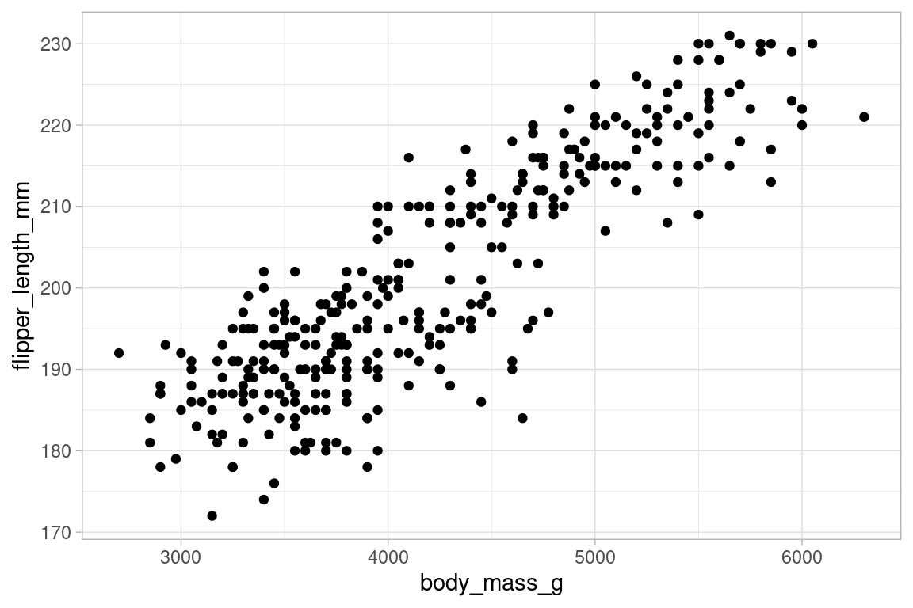
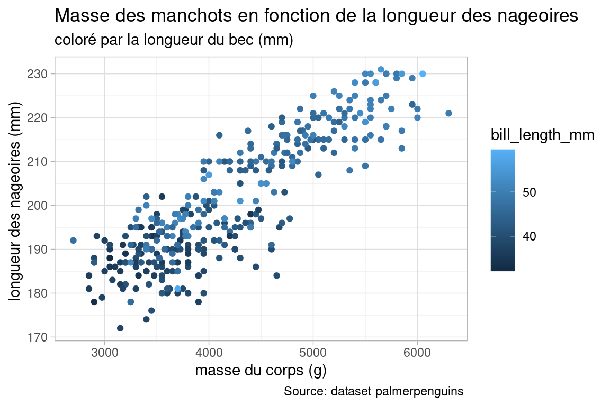

Chapitre 7 Galerie de graphiques avec ggplot
Cette section contient des exemples de visualisations obtenues avec la librairie ggplot2.
Elle reprend des exemple de cette page https://r-statistics.co/Top50-Ggplot2-Visualizations-MasterList-R-Code.html adaptés en français et augmentés d’explications
Les exemples seront réalisés avec le jeu de données des manchots de la librairie palmerpenguins, dont vous pouvez avoir un aperçu avec la fonction summary().
library(palmerpenguins) # charche le jeu de données 'penguins'
data("penguins")
summary(penguins) # résumé des variables du dataframe## species island bill_length_mm bill_depth_mm flipper_length_mm body_mass_g sex year
## Adelie :152 Biscoe :168 Min. :32.10 Min. :13.10 Min. :172.0 Min. :2700 female:165 Min. :2007
## Chinstrap: 68 Dream :124 1st Qu.:39.23 1st Qu.:15.60 1st Qu.:190.0 1st Qu.:3550 male :168 1st Qu.:2007
## Gentoo :124 Torgersen: 52 Median :44.45 Median :17.30 Median :197.0 Median :4050 NA's : 11 Median :2008
## Mean :43.92 Mean :17.15 Mean :200.9 Mean :4202 Mean :2008
## 3rd Qu.:48.50 3rd Qu.:18.70 3rd Qu.:213.0 3rd Qu.:4750 3rd Qu.:2009
## Max. :59.60 Max. :21.50 Max. :231.0 Max. :6300 Max. :2009
## NA's :2 NA's :2 NA's :2 NA's :27.1 Représenter le lien entre deux variables
Pour examiner le lien qu’il peut exister entre deux variables d’une population , le plus courrant est de réaliser un nuage de points (scatterplot in english). Sur la base de la forme de ce nuage, on pourra décider de calculer la corrélation, faire une regression etc.
7.1.1 Nuage de points simple
library(palmerpenguins) # charche le jeu de données 'penguins'
data("penguins")
simpleplot <- ggplot(data = penguins, aes(x=body_mass_g, y=flipper_length_mm))+
geom_point()
simpleplotBeaucoup de choses sont faites par défaut avec ce code minimal :
- figuré des points (cercles pleins )
- figurés sont de couleurs noire
- thème graphique par défaut : grille blanche sur fond gris clair
- axes étiquetés avec le nom brut des variables (axe X et Y)
- graduations des axes
- pas de titre
Je préfère utiliser un thème moins marqué, theme_light, qu’on peut ajouter à l’objet simpleplot, pour changer de thème.
simpleplot_light <- ggplot(data = penguins, aes(x=body_mass_g, y=flipper_length_mm))+
geom_point()+
theme_light()
simpleplot_light
Pour modifier la couleur , on utilise les arguments de la fonction geom_point.
On utilise un nom de la liste des couleurs prédéfinies de R, un entier entre 0 et 25 pour la forme des figurés:
simpleplot_light <- ggplot(data = penguins, aes(x=body_mass_g, y=flipper_length_mm))+
geom_point(color="darkcyan", shape=18)+
theme_light()
simpleplot_lightBeaucoup d’autres options sont modifiables, pour en avoir un aperçu, tapez la commandes vignette("ggplot2-specs") dans la console R.
7.1.2 Ajouter un titre , étiqueter les axes
On continue de “décorer” l’objet ggplot avec des fonctions spécifiques :
labs()pour le titre, le sous-titre -xlabetylabpour les étiquettes des axes X et Y- évenutellement,
caption, un argument de la fonctionlabs()pour une sorte de cartouche, idéale pour citer les sources.
plot_complet <- ggplot(data = penguins, aes(x=body_mass_g, y=flipper_length_mm))+
geom_point(color="darkcyan", shape=18)+
theme_light()+
labs(title = "titre principal du graphique",subtitle = "un sous-titre ", caption = "Source: dataset palmerpenguins ")+
xlab("étiquette des abscisses")+
ylab("étiquette des ordonnées ")
plot_complet7.1.3 Nuage de points colorés par variable continue (quantitative)
Pour colorer les figurés selon une troisième variable, on demande à ggplot de réaliser un mapping (i.e. on “câble” deux variables ensemble) entre une variable du dataframe , et une variable visuelle.
Cela se fait à l’intérieur de la fonction geom_point(), avec l’expression aes(color=bill_length_mm).
Cette expression réalise la liaison entre la valeur de la variable bill_length_mm et la couleur du figuré (argument color). L’échelle de couleur par défaut est un gradient de nuances de bleu.
Ici nous allons lier la variable continue bill_length_mm avec la couleur des figurés.
plot_color_by_var <- ggplot(data = penguins, aes(x=body_mass_g, y=flipper_length_mm))+
geom_point(aes(color=bill_length_mm))+
theme_light()+
labs(title = "Masse des manchots en fonction de la longueur des nageoires",subtitle = "coloré par la longueur du bec (mm)", caption = "Source: dataset palmerpenguins ")+
xlab("masse du corps (g)")+
ylab("longueur des nageoires (mm) ")
plot_color_by_var
7.1.4 Nuage de points colorés par variable discrète (qualitative)
Le principe est similaire au précédent, seule la variable affectée à la couleur va changer, on utilise cette fois la variable qualitative species. GGplot2 se charge du reste et affecte une couleur à chaque espèce dans le nuage de points.
plot_color_by_var <- ggplot(data = penguins, aes(x=body_mass_g, y=flipper_length_mm))+
geom_point(aes(color=species))+
theme_light()+
labs(title = "Masse des manchots en fonction de la longueur des nageoires",subtitle = "coloré par espèce", caption = "Source: dataset palmerpenguins ")+
xlab("masse du corps (g)")+
ylab("longueur des nageoires (mm) ")
plot_color_by_var7.1.5 Nuage de points et droite de regression / de lissage
plot_color_by_var <- ggplot(data = penguins, aes(x=body_mass_g, y=flipper_length_mm))+
geom_point()+
geom_smooth(method="lm", se=F)+
theme_light()+
labs(title = "Masse des manchots en fonction de la longueur des nageoires",subtitle = "avec la droite de regression", caption = "Source: dataset palmerpenguins ")+
xlab("masse du corps (g)")+
ylab("longueur des nageoires (mm) ")
plot_color_by_varGGplot propose une fonction de lissage, geom_smooth, qui propose des courbes qui généralisent le nuage de points, par différentes méthodes. La plus simple est la droite de régression linéaire, mais il est également possible d’utiliser une LOESS ou une régression linéaire multiple.
On peut également afficher “l’intervalle de confiance” de la courbe, avec l’argument se de la fonction geom_smooth() mis à TRUE. C’est l’intervalle autour de la courbe dans lequel se trouveraient les autres droites de régression si on venait à répéter la régression sur un sous-échantillon un grand nombre de fois. Quand cet intervalle est étroit, on peut l’interpréter comme le signe d’une regression robuste , car 95% (la valeur par défaut, que l’on peut forcer avec l’argument level ) des droites se retrouveraient dans cette enveloppe, si on répétait l’opération sur d’autres échantillons de la même population.
7.1.6 À ne pas faire
Il est tentant d’utiliser toutes les variables visuelles et ajouts possibles, en un seul graphique : - couleur des figurés - forme des figurés - taille des figurés - transparence - étiquettes de certains points - droites/courbes de prédictions
le résultat final perd en lisibilité et le message est complexe : il faut alors tenir compte de plusieurs variables à la fois pour interpréter le graphique. Voici un exemple
library(viridis)
overcomplicated_plot <- ggplot(data = penguins %>% na.omit(), aes(x=body_mass_g, y=flipper_length_mm, group=species))+
geom_point(aes(color=species, shape=sex, size=bill_length_mm))+
geom_smooth(method="lm", se=T, aes(linetype=species), color="blue")+
theme_light()+
labs(title = "Graphique montrant trop de variables",subtitle = "Ne faites pas ça ", caption = "Source: dataset palmerpenguins ")+
xlab("masse du corps (g)")+
ylab("longueur des nageoires (mm) ")+
scale_colour_viridis_d()
overcomplicated_plot7.1.7 Ajouter les histogrammes marginaux
Parfois à cause de points superposés par exemple, ou masqués par la taille d’autres points voisins, il est difficile d’estimer visuellement la densité d’individus dans les zones de valeurs des deux variables X et Y. Il est pertinent d’ajouter , sur les côté du graphe, l’histogramme des variables choisies en X et Y.
On utilise pour ça le package ggExtra. Une fois le graphe ggplot initial constitué (ici margin_hist_plot), il est passé en argument à la fonction ggmarginal qui va le décorer avec les histogrammes des variables qui ont été affectées aux variables visuelles x et y de la fonction aes().
library(ggExtra)
margin_hist_plot <- ggplot(data = penguins %>% na.omit(), aes(x=body_mass_g, y=flipper_length_mm, group=species))+
geom_point(aes(color=species))+
theme_light()+
labs(title = "Masse et longueur des nageoires",subtitle = "Avec histogrammes marginaux", caption = "Source: dataset palmerpenguins ")+
xlab("masse du corps (g)")+
ylab("longueur des nageoires (mm) ")
ggMarginal(margin_hist_plot, type = "histogram", fill="transparent" )Attention cependant à ne pas surcharger le graphique inutilement, il faut que l’affichage des histogramme ait un intérêt (par exemple une bi-modalité) en lui même et qu’il puisse être mobilisé dans le discours/l’interprétation du graphique.
7.2 Lien entre plusieurs variables
On s’intéresse maintenant à l’affichage simultané du lien qui peut exister entre plusieurs variables quantitatives. Souvent , ce lien est la corrélation, on appel donc ce genre de graphiques des correlogrammes
7.2.1 Correlogramme simple avec GGally
Le package GGally possède une fonction pour réaliser un corrélogramme, que l’on peut facilement compléter avec d’autres informatiosn utiles : distribution des variables individuellement, affichage du nuages de points etc…
on commence par filtrer les variables numériques du dataset des manchots à l’aide de la fonction select du package dplyr :
La fonction ggcorr réalise un corrélogramme simple, où la couleur représente la valeur du coefficient de corrélation sur une échelle de couleur bidirectionnelle.